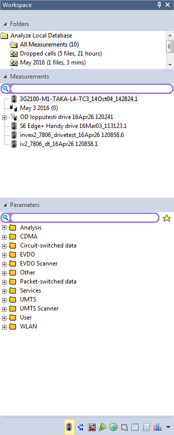
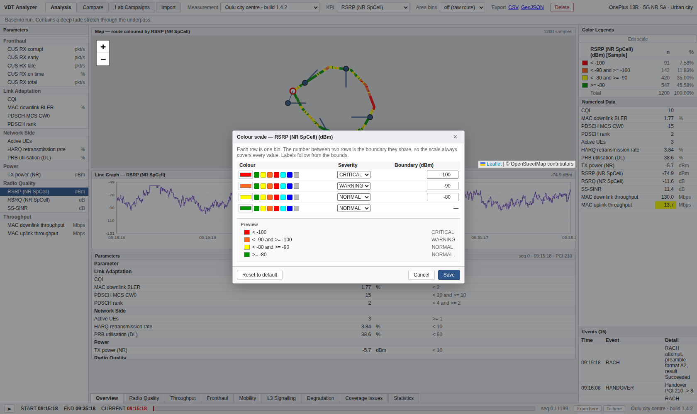
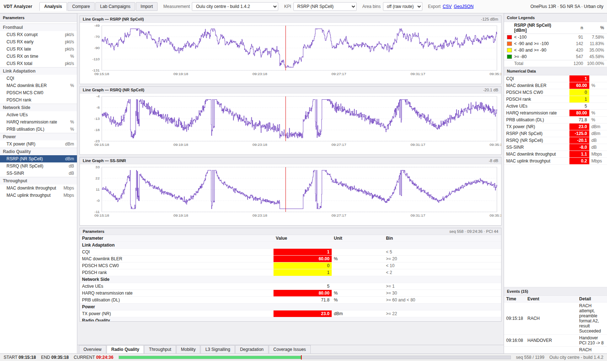
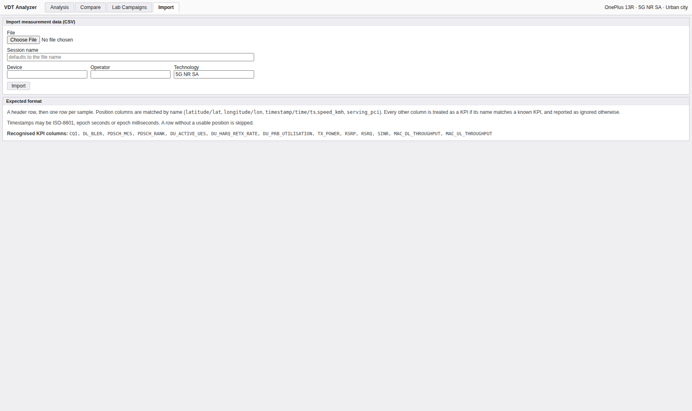
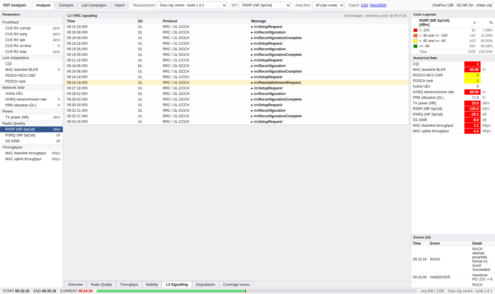
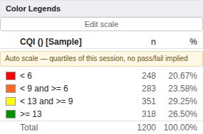

Nemo Analyze에서 화면을 여는 방법은 하나뿐입니다 — 좌측 Workspace에서 측정 파일을 고르고, 파라미터를 골라, "어디에 열지"를 고릅니다. 메뉴 구조가 아니라 데이터에서 출발하는 구조입니다. 우리 화면이 탭 기반인 것과 근본적으로 다르고, 이 차이가 아래 대부분의 격차를 설명합니다.

Measurements 페이지의 3단 구조 · 원문 p24"The Workspace forms the basis of the user interface." p24
기본 위치는 좌측이고 떼어내 띄울 수 있으며, 더블클릭하면 다시 붙습니다. 하단 아이콘 탭으로 9개 페이지를 전환합니다.
| 페이지 | 담는 것 | 우리 |
|---|---|---|
| Measurements | 측정 파일. 3단 — Folders(All Measurements + 사용자 폴더, 현재 DB 연결명 표시) · Measurements · Parameters | 부분 |
| IP Traces | IP/UDP 패킷 트레이스 (UC3) | 범위 외 |
| Binary Logs | 단말 바이너리 로그 (UC4) | 범위 외 |
| Base Stations | BTS 파일. 맵에 드래그해 경로와 연결 | 없음 |
| Maps | MapInfo/live map 자산 | 자산 종류 없음 |
| Polygons | 자산이자 분석 도구. .TAB 임포트는 자산이지만, Draw polygon → Polygon region은 "specify an area of any shape, and run statistics over that area"(p468) | ✅ ⑤ — 분석 쪽이 생김 .TAB 임포트(자산 쪽)는 여전히 없지만, "any shape 위의 통계"는 있습니다.
자산이 아니라 기능이 본체였다는 이 표의 판단이 맞았습니다 |
| Data Source Files | 외부 데이터 소스 | 없음 |
| Macros · Reports | 매크로, 리포트 템플릿 | 리포트만 |
좌측에 Parameters 트리 + 검색창이 있고, 측정 세션은 상단 드롭다운입니다. 즉 3단 중 Parameters 한 단만 도크에 있고 Measurements는 도크 밖으로 나갔습니다. 세션이 수십 개 단위인 우리 규모에서는 드롭다운이 더 빠르지만, Folders(측정 파일 정리)는 세션이 늘어나면 필요해집니다 — 지금 우리는 세션을 분류할 방법이 없습니다.
Base Stations · Maps · Data Source Files는 우리가 그런 자산을 다루지 않기 때문에 페이지가 없는 것이 자연스럽습니다. 격차가 아니라 범위 차이입니다.
첫 판에서 Polygons를 "MapInfo 자산 계열, 우리가 다루지 않는 종류"로 묶었습니다.
절반만 맞습니다. .TAB 파일 임포트는 확실히 자산이고 범위 밖입니다.
그러나 Map 메뉴의 폴리곤은 분석 도구입니다 p468:
"Polygon region enables you to specify an area of any shape, and run statistics over that area. The results are displayed in the statistics data view."
같은 메뉴에 Draw polygon(직접 그리기)과 Folder from area(그 영역을
지속되는 측정 부분집합으로)가 있고, Utilities | Global Filters는
폴리곤 영역 선택을 앱 전역 필터로 받습니다 p467.
우리에게는 임의 영역 선택이 없습니다. 영역 비닝은 고정 격자이고
(GeoAnalysisService.areaBins()), 사용자가 "이 사거리만" 을 그릴 방법이 없습니다.
자산(범위 밖)과 기능(범위 안, 미구현)을 갈라 적었어야 했습니다.
p24 그림 한 장에 3단이 그대로 보이고, 각 단의 구성도 읽힙니다.
| 단 | 그림에 보이는 것 | 우리 |
|---|---|---|
| Folders | Analyze Local Database(DB 연결명) 아래
All Measurements (10), Dropped calls (5 files, 21 hours),
May 2016 (1 files, 3 mins) — 파일 수와 총 측정 시간이 함께 |
◐ ⑧ — 폴더는 없고 찾기가 생김
|
| Measurements | 검색창 + 파일 목록. 일부 항목은 펼칠 수 있음(한 드라이브 안의 여러 장치) | 드롭다운 + 찾기(⑧) 한 드라이브 안의 여러 장치를 펼치는 쪽은 아직 없습니다 |
| Parameters | 검색창 + ★ 즐겨찾기 + 분류 트리 — Analysis · CDMA · Circuit-switched data · EVDO · EVDO Scanner · Other · Packet-switched data · Services · UMTS · UMTS Scanner · User · WLAN | 분류 + 검색은 있음 |
분류 그룹핑과 검색은 우리도 있습니다 — ParameterTree가
카테고리별로 묶고, 검색은 표시명·내부명·카테고리를 모두 훑으며 "N of M parameters"로
몇 개가 걸렸는지 알려 줍니다. 이 마지막 것은 레퍼런스에 없습니다.
없는 것 둘:
User 분류. 레퍼런스는 사용자가 만든 KPI를
전용 가지에 모읍니다 p83.
우리는 KPI를 만들 때 카테고리를 사용자가 직접 입력하므로,
직접 만든 KPI가 기본 제공 KPI 사이에 섞여 구별되지 않습니다.
"이 KPI는 어디서 왔나"가 화면에서 사라진 셈입니다.여기가 구조적으로 가장 다른 곳입니다. 파라미터를 우클릭·더블클릭하면 질의가 실행되고 결과가 뷰로 열립니다. 즉 메뉴 항목이 아니라 파라미터 × 열 곳의 조합이 기능 목록입니다.
| 항목 | 하는 일 | 원문 | 우리 |
|---|---|---|---|
| Statistics over parameter | 파라미터 하나에 대한 통계, 필터 유무 선택 | p50 | 있음 |
| Statistics by: No Grouping | 그룹핑 없는 집계 | p51 | 있음 |
| Statistics by: Fixed Geographical Bin Area | 고정 지리 빈 단위 집계 | p52 | Area bins |
| Lee's criteria sampling | 스캐너 데이터의 거리 기반 집계 (별도 라이선스) | p55 | 이름값 미달 |
| Parameter launchpad | Cumulation & density · Count · Average · Min · Max · Std dev · Variance · Mode · Median · Midrange · Histogram | p57 | 일부 |
| Open Distance Bin In | 거리 빈 결과를 map / graph / grid / text 중 하나로 | p59 | 거리 프로파일 |
| Change defaults | 파라미터별 기본 색상셋 · 그래프 축 상하한 · 기본 뷰 · 기본 통계 · 기본 드릴다운 워크북 | p59 | 색상만 |
Change defaults의 Statistics 탭에는 CDF/PDF 계산용
Threshold · Condition · Minimum · Maximum · Interval · Direction이 있고,
구간 경계의 어느 쪽을 포함할지 고르는 Up/Down 설정이 따로 있습니다 —
>0 and <=25 대 >=0 and <25. 포함되는 쪽 값이 X축에 인쇄됩니다.
임계 편집기(ThresholdEditor)는 경계값만 편집하고 포함 방향은
"하한 포함, 상한 배제"로 고정입니다. 값이 정확히 경계에 놓이는 표본이 어느 구간으로 가는지를
사용자가 못 고릅니다. RSRP 같은 연속값에서는 거의 문제가 안 되지만, 정수로 양자화된
KPI(예: 임계가 정확히 −100인데 −100이 다량 존재)에서는 두 구간의 개수가 눈에 띄게 갈립니다.


Change defaults는 이 임계를
파라미터의 기본값으로 저장합니다 — 우리는 화면 단위| 뷰 | 원문 | 우리 |
|---|---|---|
| Graphs — line / bar / scatter / color grid / surface | p94–111 | 라인·바·파이. color grid·surface 없음 |
| Grids (+ Side panel, Row details, Export) | p112–121 | 표 |
| Maps / Live Maps (+ Google Street View) | p122–131 | Street View 없음 |
| MapX (Map/Route/BTS properties) | p132–146 | MapInfo 계열 |
| Spreadsheet grid (셀 서식·필터·수식) | p180–189 | 없음 |
| Indoor / IBWC maps | p192–199 | 실내 범위 외 |
| Numerical data views | p200 | 우측 Numerical Data |
| Timeline view (+ Highlight Parameter, Range selection) | p203–208 | 진행 바 + 재생 트랜스포트(③)
스크럽·재생·역방향·속도는 생겼고, Range selection과
Highlight Parameter는 여전히 없습니다 |
| Activity — 업로드·변환 큐 진행 + Cancel All | p213 | ✅ ⑧ — 진행 + 취소 |
| Log window — 오류 메시지와 처리 중인 SQL | p213 | 없음 |
| Info views · Network Parameters · Measurement Settings · Properties · Query clipboard | p202–212 | 없음 |
(1) Activity의 절반만 있습니다. 우리 Import history는 끝난 것의 이력이고, 진행 중인 큐와 취소가 없습니다. 대용량 임포트 중에 사용자가 할 수 있는 일이 없습니다.
(2) Log window의 SQL 표시에는 우리 쪽 대응물이 있습니다. 우리는 사용자가 SQL을
볼 일이 없는 구조지만, KPI 그래프가 생성한 SQL은 같은 값어치가 있습니다 —
"이 KPI가 실제로 무엇을 계산했나"를 검증할 수 있게 하니까요.
현재 validate 응답에 sql 필드가 이미 들어 있으나 화면에 노출하지
않습니다. 표시만 하면 되는, 비용이 거의 없는 항목입니다.

사업자가 "커버리지 영역"을 특정 파라미터 임계로 정의하는 실무를 그대로 옮긴 시나리오입니다.
"all data with Received Signal Code Power (RSCP) of -100 or higher will be considered measurement data from coverage area … The global filter created based on this condition will exclude all data with RSCP values lower than -100 from all subsequent Nemo Analyze operations."
Utilities | Global Filters → EditAdd → Name에서 <Secondary parameter> 선택… 버튼 → 2차 파라미터로 RSCP best active set 선택Add → RSCP >= -100Finish. 이후 모든 조작이 이 필터를 통과한 데이터에만 적용됨핵심은 "1차 데이터셋을 2차 파라미터로 거른다"는 것입니다 — 결과 데이터셋에는 2차 파라미터 조건을 만족하는 시점의 1차 값만 남습니다.
전역 필터라는 개념 자체가 없습니다. 우리 필터는 화면 단위입니다 — Statistics 탭의 범위 필터, 지도의 임계 색상. 화면을 옮기면 초기화됩니다.
다만 2차 파라미터 게이팅은 KPI Workbench로 표현할 수 있습니다 —
SOURCE_KPI(RSRP) + SOURCE_KPI(대상) → COMBINE →
FILTER: rsrp >= -100 → OUTPUT. 결과가 새 KPI가 되므로 이후 모든 화면에서
쓸 수 있습니다. 레퍼런스는 모드 설정으로, 우리는 파생 KPI로 같은 목적에 도달하는
셈인데, 우리 쪽은 "지금 보고 있는 화면에 즉시" 적용되지 않는다는 차이가 남습니다.
L3 signaling parameter search 파라미터를 더블클릭Short MAC value)와
검색 대상 메시지(예: SERVICE_REQUEST)를 입력Parameter name으로 결과 열의 이름을 직접 정함즉 디코딩된 시그널링 본문에서 값을 뽑아 새 열로 만드는 기능입니다. 메시지 목록을 보는 것이 아니라 메시지 안의 필드를 파라미터로 승격시킵니다.
우리 Signaling 화면은 메시지 목록과 필터, 그리고 커서 동기화를 제공합니다 — 보는 것까지는 대응합니다. 메시지 본문의 필드를 뽑아 KPI 열로 만드는 경로는 없습니다. 우리 시그널링은 이벤트 타입과 시각이 주된 정보이고 본문 필드가 구조화돼 있지 않습니다. 이 격차는 데이터 모델에서 시작하므로 UI만으로는 닫히지 않습니다.

색상셋은 레퍼런스에서 독립된 1급 자산입니다. 값 범위에서 자동 생성 (UC28)하거나 직접 만들고(UC29), 맵(UC30)과 그리드(UC31)에 각각 적용합니다.
여기는 우리가 대응을 갖춘 몇 안 되는 곳입니다. 색상 스케일 편집기가 있고,
자동 스케일(값 범위에서 색 경계를 만드는 것 — UC28에 정확히 대응)도 있으며,
지도·차트·범례가 같은 스케일을 공유합니다. 다르게 만든 부분은 스케일을 파라미터의
기본값으로 저장하는 Change defaults의 층위입니다 — 우리는 화면 단위로만
기억합니다.

이 표가 쓰인 뒤 백로그 ①–⑧이 진행되어 7개 중 1개가 닫혔고, 1개가 절반, 1개는 "하지 않기로" 판정됐습니다. 지운 것이 아니라 무엇이 됐는지를 남깁니다. 전체 대조는 Use Case 31개 대조표.
| 항목 | 규모 | 왜 · 지금 |
|---|---|---|
| 작음 | Activity의 없는 절반이었습니다 —
✅ ⑧에서 완료. 진행 중인 잡이 행 수와 함께 보이고,
POST /api/import/jobs/{id}/cancel이 요청을 남기면 적재 루프가 다음 배치에서
그것을 보고 멈춥니다. 멈춘 임포트는 실패와 같은 롤백을 타므로 절반 남은 세션이 생기지 않습니다 | |
| KPI 그래프의 생성 SQL 표시 | 매우 작음 | 응답에 이미 있음. 표시만 하면 됨. 하지 않기로 판정 — 그 밑의 진짜 요구("이 숫자가 어디서 왔나")는 ⑥의 노드 미리보기가 더 잘 답합니다 (⑥ 브리프) |
| 임계 포함 방향 선택 | 작음 | 양자화된 KPI에서 구간 개수가 갈림.
여전히 남음 — 규칙은 KpiSql에 하한 포함·상한 배제로 한 자리에 고정돼 있고,
고르게 만드는 일은 그 한 자리를 여는 일입니다 |
| 파라미터 ★ 즐겨찾기 | 매우 작음 | 매일 보는 것은 대여섯 개인데 매번 검색해야 함. 여전히 남음 |
| 사용자 KPI의 출처 표시 (User 분류) | 작음 | 직접 만든 KPI가 기본 제공 KPI와 구별되지 않음. 여전히 남음 |
| 세션 폴더 | 중간 | 세션 수가 늘면 필요 — ◐ ⑧이 압력의 절반을 덜었습니다. 폴더는 없지만 세션 찾기가 생겼습니다 (이름·날짜·기술로 좁히기). 폴더는 "정리"이고 찾기는 "도달"인데, 급한 쪽은 도달이었습니다 |
| color grid · surface 그래프 | 중간 | 두 파라미터 상관을 보는 유일한 뷰 (UC8). 여전히 남음 |